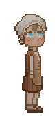

In meiner Freizeit absolviere ich derzeit den Web-Development Kurs von Angela Yu bei Udemy. Nebenbei versuche ich mich an der Erstellung von Pixel art/Logoerstellung bei aseprite und Inkscape. Weiter unten kannst du einige meiner Werke sehen. Ich habe die Assets von anderen Künstlern über itch.io erworben und diese dann angepasst und animiert.
